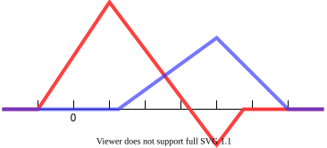

均匀开B样条
1 原理
定义红色函数为$f_{1}$,蓝色函数为$f_{2}$

如果现在我们取$R^{n}$中的两个点$P_{1},P_{2}$,定义$f(x)=f_{1}\cdot P_{1}+ f_{2}\cdot P_{2}$,这样我们就得到了一条曲线，并且由于$f_{1},f_{2}$是连续的所以曲线也是连续的
如果我们有n个点,那我们就可以选取n个函数，通过计算得到一条曲线$f(x)=\sum f_{i}\cdot P_{i}$,$f(x)$的光滑程度与$f_{i}$有关
每个点对应一个函数，这一系列函数称为基函数
2 基函数
定义
$$ f_{n,n+1}(x)=
\begin{cases}
1 & n \le x < n+1 \\
0 & other
\end{cases}
$$
当$k>1$递归定义
$$f_{n,n+k} = \frac{x-n}{k-1}f_{n,n+k-1}+\frac{n+k-x}{k-1}f_{n+1,n+k}$$
其中$f_{n,n+k}$是$C^{k-2}$的，并且有
$$\sum_{i}^{i+k} f_{i,i+k} = 1\quad i+k-1\le x<i+k$$
3 均匀开B样条
设有n个点为$P_{1}\dots P_{n}$，需要次数为p的一个开B样条曲线，由以上条件我们选择$f_{1,1+p+1}\dots f_{n,n+p+1}$作为基函数，于是
$$ f(x)=\sum_{i=1}^{n} f_{i,i+p+1}(x)\cdot P_{i} $$
因为B样条曲线自变量$x$取值范围需要满足
$$\sum_{i=1}^{n} f_{i,i+p+1}(x)=1$$
所以取值范围为$p+1 \le x < n+1$,而为了使曲线存在需满足$p < n$